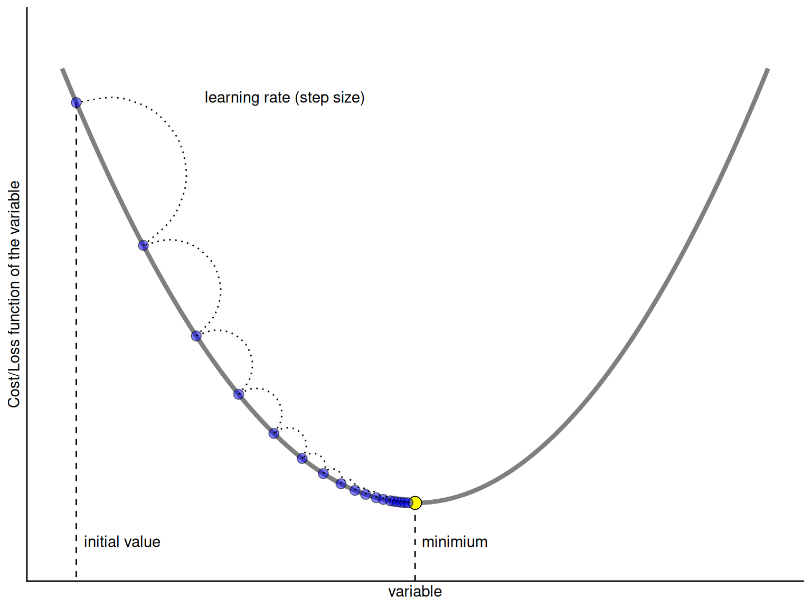
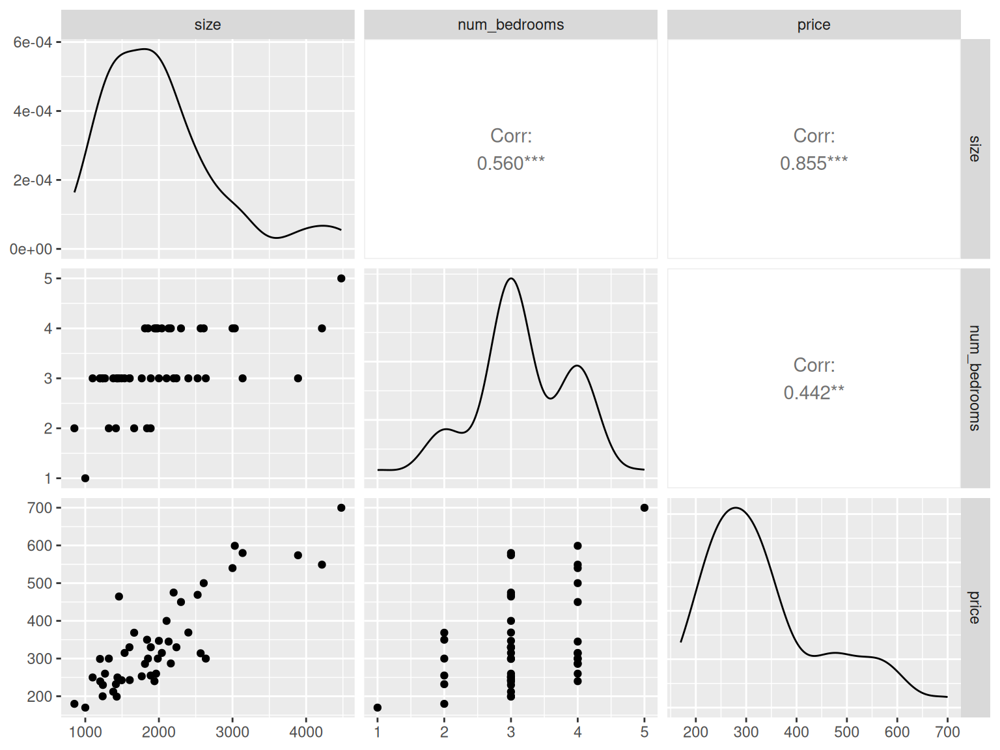
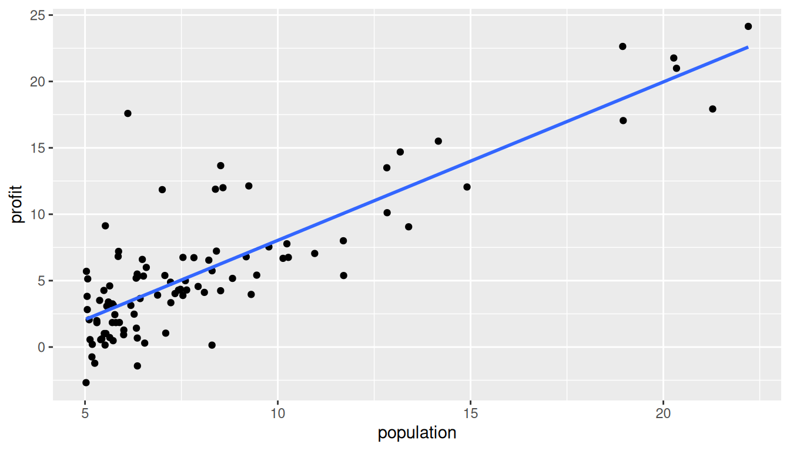

population profit
1 6.1101 17.5920
2 5.5277 9.1302
3 8.5186 13.6620
4 7.0032 11.8540
5 5.8598 6.8233
6 8.3829 11.8860
7 7.4764 4.3483
8 8.5781 12.0000
9 6.4862 6.5987
10 5.0546 3.81663 Linear Regression and KNN Regression
3.1 Linear Regression
Mathematically, a supervised learning problem can be represented by
\[Y=f(\mathbf{X}) + \epsilon\]
where \(\epsilon\) is a random error term (includes measurement error, other discrepancies) independent of \(\mathbf{X}\) and has mean zero.
Objective: To approximate/estimate \(f(\mathbf{X})\)
For linear regression, we assume that \(f(\mathbf{X})\) is a linear function of \(\mathbf{X}\), that is, for \(p=1\)
\[f(\mathbf{X}) = \beta_0 + \beta_1 X_1\]
3.2 Linear Regression: Example
Suppose the CEO of a restaurant franchise is considering opening new outlets in different cities. They would like to expand their business to cities that give them higher profits with the assumption that highly populated cities will probably yield higher profits.
They have data on the population (in 100,000) and profit (in $1,000) at 97 cities where they currently have outlets.
The first ten observations of the dataset are shown below.
3.3 Linear Regression
Given this dataset, our objective is to estimate \(\beta_0\) and \(\beta_1\).
If we are able to estimate \(\beta_0\) and \(\beta_1\), we can
predict the profit for a new city with a given population,
understand the relationship between
populationandprofitbetter.
3.4 Linear Regression: Estimating Parameters
We use training data to find \(b_0\) and \(b_1\) such that
\[\hat{y}=b_0 + b_1 \ x_1\] Observed response: \(y_i\) for \(i=1,\ldots,n\)
Predicted response: \(\hat{y}_i\) for \(i=1, \ldots, n\)
Residual: \(e_i = \hat{y}_i - y_i\) for \(i=1, \ldots, n\)
Mean Squared Error (MSE): \(MSE =\dfrac{e^2_1+e^2_2+\ldots+e^2_n}{n}\) also known as the loss/cost function
Problem: Find \(b_0\) and \(b_1\) which minimizes \(MSE\)
3.5 Gradient Descent Algorithm
How do we minimize the \(MSE\)?
One optimization technique we can use is called the gradient descent.
NOTE: Gradient Descent is not a machine learning technique. It is an optimization technique that helps to build machine learning models.
3.6 Gradient Descent Algorithm

Updates to the variable:
\[\text{new value of variable} = \text{old value of variable} - \big(\text{step size} \times \text{gradient of function with respect to variable}\big)\]
3.7 Gradient Descent Algorithm

3.8 Gradient Descent Algorithm

3.9 Gradient Descent for Linear Regression
Objective: We want to find \(b_0\) and \(b_1\) which minimizes
\[MSE = \dfrac{e^2_1+e^2_2+\ldots+e^2_n}{n} = \dfrac{(\hat{y}_1 - y_1)^2 + (\hat{y}_2 - y_2)^2 + \ldots + (\hat{y}_n - y_n)^2}{n}\]
\[MSE = \dfrac{(b_0 + b_1 \ x_{11} - y_1)^2 + (b_0 + b_1 \ x_{12} - y_2)^2 + \ldots + (b_0 + b_1 \ x_{1n} - y_n)^2}{n}\]
\[MSE = \displaystyle \dfrac{1}{n}\sum_{i=1}^{n} (b_0 + b_1 \ x_{1i} - y_i)^2 = \displaystyle \dfrac{1}{n}\sum_{i=1}^{n} (\hat{y}_i - y_i)^2 = \displaystyle \dfrac{1}{n}\sum_{i=1}^{n} (e_i)^2\]
3.10 Gradient Descent for Linear Regression
To minimize \(MSE\) with respect to \(b_0\) and \(b_1\), we need the derivatives/gradients of \(MSE\) with respect to \(b_0\) and \(b_1\).
\[\text{gradient of MSE with respect to} \ b_0 = \dfrac{2}{n} \displaystyle \sum_{i=1}^{n} (b_0 + b_1 \ x_{1i} - y_i) = \dfrac{2}{n} \displaystyle \sum_{i=1}^{n} (\hat{y}_i - y_i)\]
\[\text{gradient of MSE with respect to} \ b_1 = \dfrac{2}{n} \displaystyle \sum_{i=1}^{n} x_{1i} (b_0 + b_1 \ x_{1i} - y_i) = \dfrac{2}{n} \displaystyle \sum_{i=1}^{n} x_{1i} (\hat{y}_i - y_i)\]
3.11 Gradient Descent for Linear Regression
The gradient descent updates will be as follows:
- For \(b_0\)
\[b_0 \ \text{(new)} = b_0 \ \text{(old)}- \bigg(\text{step size} \times \text{gradient with respect to} \ b_0\bigg)\] \[b_0 \ \text{(new)} = b_0 \ \text{(old)}- \bigg(\text{step size} \times \dfrac{2}{n} \displaystyle \sum_{i=1}^{n} (\hat{y}_i - y_i)\bigg)\]
- For \(b_1\)
\[b_1 \ \text{(new)} = b_1 \ \text{(old)} - \bigg(\text{step size} \times \text{gradient with respect to} \ b_1 \bigg)\]
\[b_1 \ \text{(new)} = b_1 \ \text{(old)} - \bigg(\text{step size} \times \dfrac{2}{n} \displaystyle \sum_{i=1}^{n} x_{1i} (\hat{y}_i - y_i)\bigg)\]
Let’s now implement this algorithm in R.
3.12 Multiple Linear Regression
Response \(Y\) and predictor variables \(X_1, X_2, \ldots, X_p\). We assume
\[Y=f(\mathbf{X}) + \epsilon=\beta_0 + \beta_1 X_1 + \beta_2 X_2 + \ldots + \beta_p X_p + \epsilon\]
\(\beta_j\) quantifies the association between the \(j^{th}\) predictor and the response.
3.13 Multiple Linear Regression: Estimating Parameters
We use training data to find \(b_0, b_1, \ldots, b_p\) such that
\[\hat{y}=b_0 + b_1 \ x_1 + \ldots + b_p \ x_p\] Observed response: \(y_i\) for \(i=1,\ldots,n\)
Predicted response: \(\hat{y}_i\) for \(i=1, \ldots, n\)
Residual: \(e_i = \hat{y}_i - y_i\) for \(i=1, \ldots, n\)
Mean Squared Error (MSE): \(MSE =\dfrac{e^2_1+e^2_2+\ldots+e^2_n}{n}\) also known as the loss/cost function
Problem: Find \(b_0, b_1, \ldots, b_p\) which minimizes \(MSE\)
We can use Gradient Descent to minimize the \(MSE\) with respect to \(b_0, b_1, \ldots, b_p\).
3.14 Multiple Linear Regression
House Prices dataset
sizeis in square feetnum_bedroomsis a countpriceis in $1,000
3.15 Multiple Linear Regression
Some Exploratory Data Analysis (EDA)

3.16 Multiple Linear Regression: Gradient Descent
The gradient descent framework for multiple regression is an extension of the ideas covered in simple (one-predictor) linear regression.
Implementing gradient descent for multiple regression is an extension of the ideas/R codes we used for simple (one-predictor) regression.
3.17 Linear Regression: Comparing Models
With the House Prices dataset, we create three models with price as the response:
fit1: a simple linear regression model with
num_bedroomsas the only predictorfit2: a simple linear regression model with
sizeas the only predictormlr_model: a multiple regression model with both
sizeandnum_bedroomsas predictors
3.18 Linear Regression: Comparing Models
- Mean Squared Error (MSE)
\[MSE = \displaystyle \sum_{i=1}^n e_i^2\]
- Residual Standard Error (RSE)
\[RSE=\sqrt{\dfrac{MSE}{n-p-1}}\]
3.19 Regression: Conditional Averaging
Restaurant Outlets Profit dataset

What is a good value of \(\hat{f}(x)\) (expected profit), say at \(x=6\)?
A possible choice is the average of the observed responses at \(x=6\). But we may not observe responses for certain \(x\) values.
3.20 K-Nearest Neighbors Regression
Non-parametric approach
Given a value for \(K\) and a test data point \(x_0\),
\[\hat{f}(x_0)=\dfrac{1}{K} \sum_{x_i \in \mathcal{N}_0} y_i=\text{Average} \ \left(y_i \ \text{for all} \ i:\ x_i \in \mathcal{N}_0\right) \]
where \(\mathcal{N}_0\) is known as the neighborhood of \(x_0\).
- The method is based on the concept of closeness of \(x_i\)’s from \(x_0\) for inclusion in the neighborhood \(\mathcal{N}_0\). Usually, the Euclidean distance is used as a measure of closeness. The Euclidean distance between two \(p\)-dimensional vectors \(\mathbf{a}=(a_1, a_2, \ldots, a_p)\) and \(\mathbf{b}=(b_1, b_2, \ldots, b_p)\) is
\[||\mathbf{a}-\mathbf{b}||_2 = \sqrt{(a_1-b_1)^2 + (a_2-b_2)^2 + \ldots + (a_p-b_p)^2}\]
3.21 Question!!!
As \(k\) in KNN regression increases,
the flexibility of the fit \(\underline{\hspace{5cm}}\) (increases/decreases)
the bias of the fit \(\underline{\hspace{5cm}}\) (increases/decreases)
the variance of the fit \(\underline{\hspace{5cm}}\) (increases/decreases)
3.22 K-Nearest Neighbors Regression (multiple predictors)
It is important to scale (subtract mean and divide by standard deviation) the predictors when considering KNN regression so that the Euclidean distance is not dominated by a few of them with large values.
3.23 Linear Regression vs K-Nearest Neighbors
| Linear Regression | KNN Regression | |
|---|---|---|
| Type | ||
| Task | ||
| Predictive Performance | ||
| Interpretability | ||
| Other |